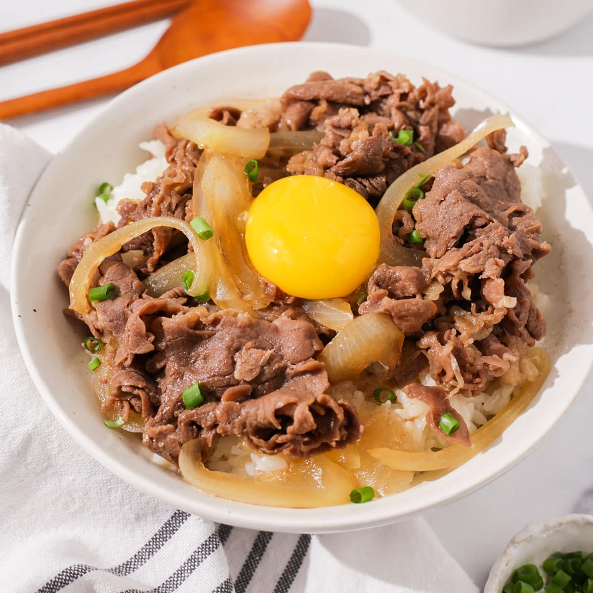

Gyudon

Ingredients:
-
Thinly sliced beef: For this recipe, I recommend chuck or rib eye.
The paper-thin slices are essential for achieving authentic gyudon
(too thick, and your beef will be chewy), and you can often find
packages of thin-cut beef at Japanese or Asian supermarkets.
Alternatively, you can always slice your own.
-
Onion: Sliced onions give sweetness to the dish and are a perfect
pair with tender beef.
-
Sauce: The sauce is a complementary balance of sweet and savory,
made with dashi (Japanese soup stock), sake, mirin, soy sauce, and
sugar. So simple and highly effective in creating robust flavor!
-
Garnish: green onions for the color and shichimi togarashi for a
spicy kick.
- Cut the onion, green onions, and beef.
-
Put the sauce ingredients, sliced onions, and beef in a large frying
pan and start cooking.
-
Serve the simmered beef and onion over steamed rice in large bowls.
Tips
-
Thinly slice the onion so it will become tender and sweeter quickly.
When the onion is cooked, it imparts a natural sweetness to the
dish.
-
Use good quality beef. Well-marbled beef will never become chewy
after being simmered in the sauce. I highly recommend ribeye for
gyudon. It's also easy to thinly slice your own meat. For
well-marbled beef, it's easier to flash freeze and cut the
semi-frozen meat.
-
Make extra dashi (Japanese soup stock) so you can use it for gyudon
and miso soup to go with the meal. I recommend making dashi either
from scratch or with a dashi packet.
-
Cook more rice than usual. Rice bowl dishes (or what we call
“donburi”) typically serve more rice per person to go with the food
on top of the rice. Therefore, prepare a little bit more than usual.
I always make 1½ rice cooker cups for two servings and 3 rice cooker
cups for four servings. Don't overcook the beef, especially if your
meat is not well-marbled. You don't want chewy meat. As soon as the
beef is no longer pink, you should stop cooking. If your meat is
well-marbled, you can let it simmer slightly longer so the meat
absorbs more flavors from the sauce.